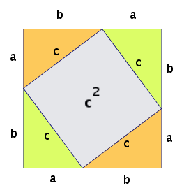

Chapter 10 Proof by exhaustion
(
Our first method of proof is not perhaps the most interesting, demanding or even the most common. However, it is very quick to unpack and will get us proving things immediately. It will give us a good launch pad onto more involved methods over the next few weeks.
)
Our method this week is called proof by exhaustion. This doesn’t mean you do it until you are exhausted. Rather, you do it until all possibilities are exhausted. It is closely related to another method we will look at in a couple of weeks. Let’s relate it to some conjectures:
| Conjecture | If true, how to prove by exhaustion? | Practical? |
|---|---|---|
| No Chinese citizen has green eyes | Check eyes of every Chinese citizen | No |
| All Irish citizens have a vowel in their surname | Check a database of Irish citizens | Possibly |
| There is no integer \(n\) such that \(n^2 + n^3 = 100\) | Check possible integers | Yes |
| The sum of the digits of a multiple of \(9\) is itself a multiple of \(9\) | Check all multiples of \(9\) | No |
| For any right-angle triangle with hypotenuse \(a\) and legs \(b\) and \(c\), \(a^2 = b^2 + c^2\) | Check every possible right-angle triangle | No |
Using this method when there are too many cases, as in (1) and (4), will take far too long, unless you’ve got a quick or systematic way to carry out the check, as in (2). This method works best for conjectures where the number of possibilities is low, as in (3).32
10.1 Steps
- Identify and list all possibilities.
- Prove that your list definitely contains all possibilities (i.e. you haven’t forgotten any).
- Show that the conjecture is true for each of the possibilities on your list.
10.2 Formal definition
To prove “If \(P\) then \(Q\)” by exhaustion, show that \[\begin{align} <center> If $P_1$ then $Q$. If $P_2$ then $Q$. $\vdots$ If $P_n$ then $Q$. </center> where $P_1$, $P_2$, ..., $P_n$ are all possible (finitely many) values of $P$. ## Practice Use these examples to practise. If the conjecture is not in the form **If ... then ...**, make sure you rewrite it before starting the proof. Attempt the proof before checking the solution. (\#cnj:nigh): If $2 \leq a \leq 7$ and $a \in{\mathbb Z}^+$, then $4 \nmid a^2 + 2$. \BeginKnitrBlock{solution}<div class="solution">\iffalse{} <span class="solution"><em>Solution. </em></span> \fi{}https://www.youtube.com/watch?v=ifMZt4l5JIM (https://www.youtube.com/watch?v=YmbTI91TUp4) </div>\EndKnitrBlock{solution} (\#cnj:thru): There is a prime number between $8$ and $12$. \BeginKnitrBlock{solution}<div class="solution">\iffalse{} <span class="solution"><em>Solution. </em></span> \fi{}https://www.youtube.com/watch?v=eQM778zoB14 </div>\EndKnitrBlock{solution} ( (\#cnj:mike): There is no integer $a$ such that $a^2 + a^3 = 100$. \BeginKnitrBlock{solution}<div class="solution">\iffalse{} <span class="solution"><em>Solution. </em></span> \fi{}XXX </div>\EndKnitrBlock{solution} ) (\#cnj:exit): No square number ends in $8$. \BeginKnitrBlock{solution}<div class="solution">\iffalse{} <span class="solution"><em>Solution. </em></span> \fi{}Solution: Watch 0:00-4:20 of https://www.youtube.com/watch?v=k0f7w4xTp1I </div>\EndKnitrBlock{solution} (\#cnj:send): $97$ is a prime number. \BeginKnitrBlock{solution}<div class="solution">\iffalse{} <span class="solution"><em>Solution. </em></span> \fi{}https://www.youtube.com/watch?v=1amtOenZEwU </div>\EndKnitrBlock{solution} <div class="alert alert-info" role="alert"> \BeginKnitrBlock{exercise}<div class="exercise"><span class="exercise" id="exr:unnamed-chunk-86"><strong>(\#exr:unnamed-chunk-86) </strong></span>Some of these conjectures are false; disprove them by finding a counterexample. Some of them are true; prove them by exhaustion. (\#cnj:syndrome): There is no two-digit number which is both a perfect square *and* a perfect cube. (\#cnj:crush): If $p$ is a prime number and $p > 5$, then $p^4$ ends in 1. (https://www.youtube.com/watch?v=Q_UdUwm3Biw) (\#cnj:defeat): There is no three-digit number which is a perfect square. (\#cnj:rich): $(a + 1)^3\geq 3^a$ for $a\in{\mathbb Z^+}$, $a\leq 4$. (\#cnj:dive): The product of two non-integers is never an integer. (\#cnj:stun): No number greater than 2 when written in English, has more letters than the number itself. (\#cnj:dirty): No number greater than 2 when written in Russian using the Cyrillic alphabet, has more letters than the number itself. (\#cnj:frighten): There is no perfect square between 4100 and 4200. (\#cnj:nest): If $p$ is a prime number such that $3 \leq p \leq 23$, then $8 \mid (p+1)(p-1)$. (\#cnj:cupboard): Every positive integer up to and including 28 is at least one of the following: prime, perfect, triangular, or can be written as $b^c$, where $b\in{\mathbb Z}$ and $c\in{\mathbb Z^+}$, $c > 1$. </div>\EndKnitrBlock{exercise} \BeginKnitrBlock{exercise}<div class="exercise"><span class="exercise" id="exr:unnamed-chunk-87"><strong>(\#exr:unnamed-chunk-87) </strong></span>Some of these conjectures are false; disprove them by finding a counterexample. Some are true; prove them by exhaustion. (\#cnj:study): Every integer between 20 and 30 (inclusive) can be written as the sum of *exactly* five **non-zero** square numbers. (\#cnj:curl): If $x$ is a positive integer less than 5, the last digit of $x^5$ is $x$. (\#cnj:drag): There are fewer square numbers below 50 than prime numbers. (\#cnj:junior): Every even integer between (and including) 4 and 30 can be written as a sum of two primes. (\#cnj:world): The sum of two distinct square numbers is a square number. (**Distinct** means the two square numbers can't be the same.) (\#cnj:landscape): For $x, y, a \in \mathbb R$, if $x > y$ then $ax > ay$. (\#cnj:write): It's impossible to move a knight from one corner of a chess board to the corner diagonally opposite in 4 moves. (You don't play chess? Look up online how a **knight** moves.) (\#cnj:wash): Each integer in the set 2, 4, 6, 8, ..., 24, 26 can be written the sum of *at most* three perfect squares. (\#cnj:cat): There are no integers $a$, $b$ and $c$ such that $(1+\frac{1}{a})(1+\frac{1}{b})(1+\frac{1}{c}) = 2$. (\#cnj:refund): If the sum of two integers is even, then at least one of the summands is even. (Don't know what a **summand** is? Have a search online...) </div>\EndKnitrBlock{exercise} </div> <!--chapter:end:10-proofbyexhaustion.Rmd--> # Direct proof Look back at the proof of **Conjecture 8.1} in Chapter 8. This was an example of a direct proof. Direct proofs use algebra to move from $P$ to $Q$. ## Steps - If possible, rewrite the conjecture in the form **If ... then ...**. - If possible, draw the map of the statement. The map is not always essential (or even easy) to draw. However for some proofs it will be invaluable! - Define any variables that you use, for example "$m \in \mathbb Q$" or "$n \in \mathbb Z, n \neq 0$". - If you are relying on any definitions or axioms (from our Miro board or elsewhere), you should explicitly reference them. You don't need to explain or prove them, but by not referencing axioms and definitions you employ, you might leave your audience in the dark. ## Formal definition Simply, prove that "If $P$ then $Q$". ## Practice Use these examples to practise. If it's not in the form **If ... then ...**, make sure you rewrite it before starting the proof. Attempt the proof before checking the solution. (\#cnj:wave:) The sum of two even numbers is even.} Rewritten conjecture : If $a$ and $b$ are even integers, then $a+b$ is even. \BeginKnitrBlock{proof}<div class="proof">\iffalse{} <span class="proof"><em>Proof. </em></span> \fi{}Since $a$ and $b$ are even, they can be written as \begin{align} a &= 2k \\ b &= 2l \end{align}\] where \(k\) and \(l\) are integers. Therefore the sum of \(a\) and \(b\) is \[\begin{align} a + b &= 2k + 2l\\ &= 2(k + l) \end{align}\] by factoring out 2.
As the sum of integers equals an integer, \(k + l\) must equal some integer. Let’s call it \(m\). Therefore we have \[\begin{align} a + b &= 2m \end{align}\] which is clearly even.(#cnj:welcome:) The square of an odd number is also odd.}
Rewritten conjecture: If \(a\) is an odd integer, then \(a^2\) is odd.
(#cnj:wood:) The sum of the first \(n\) positive integers is \(\frac{n}{2}(n+1)\).
Solution. Solution: https://www.youtube.com/watch?v=aaFrAFZATKU
Exercise 10.1 Some of these conjectures are false; disprove them by finding a counterexample. Some of them are true; prove them using a direct proof.
Conjecture 10.1 : If \(a\) and \(b\) are both perfect squares, then \(ab\) is also a perfect square. Conjecture 10.2 : (The sum of two even numbers is even.) Conjecture 10.3 : The sum of two odd integers is even. Conjecture 10.4 : All odd primes end with 1, 3, 7 or 9. Conjecture 10.5 : If \(a\) and \(b\) are both odd, then the difference of their squares is even. (This means if you square two odd numbers and find the difference between these two squares, the difference will be even.) Conjecture 10.6 : The sum of two consecutive integers is odd. Conjecture 10.7 : The sum of three consecutive integers is odd. Conjecture 10.8 : The sum of three consecutive integers is divisible by 3. Conjecture 10.9 : The sum of three consecutive odd numbers is divisible by 3. Conjecture 10.10 : The sum of two consecutive odd numbers is divisible by 4. Conjecture 10.11 : For a right-angled triangle, the square of the hypotenuse is equal to the sum of the squares of the other two sides. This is the Pythagoras Theorem. Prove it algebraically with a direct proof using this picture:

Exercise 10.2 Some of these conjectures are false; disprove them by finding a counterexample. Some of them are true; prove them using EITHER a proof by exhaustion or a direct proof.
Conjecture 10.12 : The product of three consecutive integers is divisible by 6. Conjecture 10.13 : There is no four-digit number that reverses its digits when multiplied by 4 (in other words, ABCD x 4 = DCBA). Conjecture 10.14 : Summing two 3-digit numbers results in a 4-digit number. Conjecture 10.15 : For any four consecutive integers, the difference between the product of the last two and the product of the first two of these numbers is equal to their sum. Conjecture 10.16 : If a number is divisible by 4, then it is divisible by 2. Conjecture 10.17 : If a number is divisible by 2, then it is divisible by 4. Conjecture 10.18 : If \(a\) is a positive nonprime whole number and some prime number \(p\) divides \(a\), then some other prime \(q\) (\(q \neq p\)) also divides \(a\). Conjecture 10.19 : If \(a + 4 > 0\), then \(a\) is positive. Conjecture 10.20 : For any negative number \(a\), \(a^2 > a\). Conjecture 10.21 : If \(a^2\) is divisible by 2, then so is \(a\). Conjecture 10.22 : If \(a^2\) is divisible by 3, then so is \(a\). Conjecture 10.23 : In the picture below, the larger square is twice the area of the smaller square:
Figure 10.1: The figure shows a square inscribed in a circle, which is inscribed in another square.